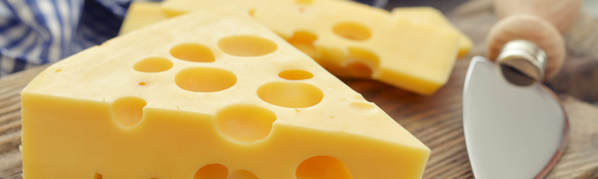
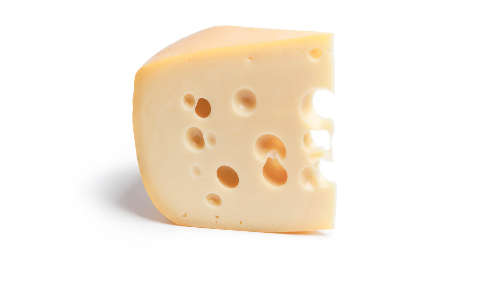
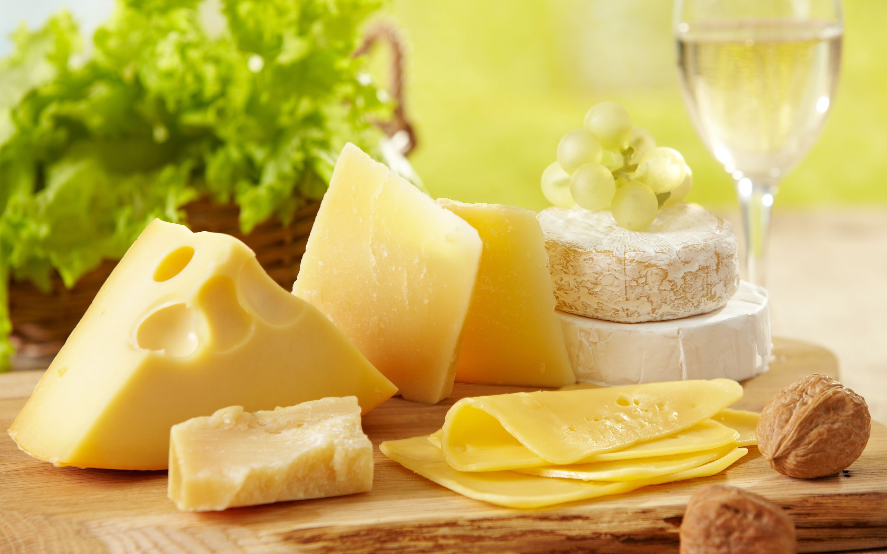

Kaas is een zuivelproduct met een vaste structuur. Door het toevoegen van stremsel en zuursel worden de vaste stoffen in de melk (eiwitten, vetten en mineralen) gescheiden van het vocht (de wei). Voorts wordt zout en eventueel schimmels toegevoegd tijdens de bereiding van kaas. Het Nederlandse woord voor kaas stamt van het Latijnse caseus, dat dezelfde betekenis heeft. Kaas bevat, naast de hoofdbestanddelen dierlijk vet en eiwit, calcium en vitamines A, B en D. Studies hebben uitgewezen dat kaas waarschijnlijk gezond is voor de tanden.
Kaas wordt een 'levend' voedsel genoemd omdat er miljoenen bacteriën in leven en vaak ook schimmels. In bepaalde kazen zoals de Mimolette en Stilton bevindt zich de kaasmijt die gaten en spleten in de kaas vreet. Een andere soort kaasmijt wordt gebruikt bij de productie van de kwarkkaas Milbenkäse of 'mijtkaas'. De kaasvlieg komt voor in Casu marzu.
 Kaassoorten
Kaas wordt gemaakt van de melk van bijna alle gedomesticeerde herbivoren, dat is in verreweg de meeste gevallen van koe-, geiten- en schapenmelk. Verder wordt kaas ook gemaakt van buffel-, paarden-, kamelenmelk, rendierenmelk en jakmelk.
Kaas kan op vele manieren worden ingedeeld. De hoofdingrediënten van kaas zijn vocht, caseïne (een eiwit) en vet. Een indeling op vochtgehalte leidt tot drie hoofdtypen, harde (geperste) kazen, zachte (ongeperste) kazen en smeerkaas.
Er is rauwmelkse kaas en kaas die gemaakt is van gepasteuriseerde melk. Rauwmelkse kaas kan de listeria bacterie bevatten, die gevaarlijk kan zijn voor zwangere vrouwen. Kazen verschillen in rijpingsduur. Sommige kazen, zoals cottage cheese, worden geheel niet gerijpt. Andere typen rijpen meerdere jaren, zoals de Italiaanse Asiago d' Allevo. Door langer te rijpen wordt de kaas steeds harder.
